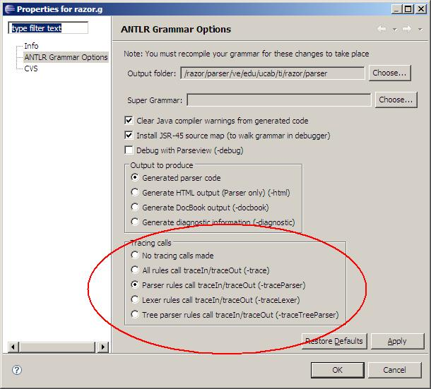

Traductores e Intérpretes UCAB : Recomendaciones sobre ANTLR
This page last changed on Nov 01, 2006 by juanca.
- El plugin ANTLR para Eclipse no le informa a Eclipse cuando el código Java generado ha cambiado. Por lo tanto, si tienen archivos .java generados abiertos, podrían ejecutarse versiones de dichos archivos distintas a las más recientes.

Es mejor cerrar todos los archivos .java generados antes de ejecutar el programa. - Para efectos de este proyecto, es mejor indicarle a ANTLR que no trate de hacer que el Analizador Sintactico se recupere después de un error sintáctico. Para ello, hay que colocar la opción defaultErrorHandler=false; como se indica:
class RazorParser extends Parser; options { k=1; buildAST = false; defaultErrorHandler=false; }
- Para poder indicar los componentes léxicos por sus literales:
tupla: "[" lista_expresiones "]";
en vez de tener que colocar identificadores definidos en el analizador léxico:
tupla: LBRACK lista_expresiones RBRAK;
y así hacer la gramática y el código generado más legibles, es necesario hacer algunas cosas:
- Definir los componentes léxicos en el Parser usando el bloque tokens:
tokens { LSQUARE= "["; RSQUARE= "]"; LBRACKET= "{"; RBRACKET= "}"; LPAREN= "("; RPAREN= ")"; // ... etc } - Definir el analizador léxico después del Analizador Sintactico.
- Importar las definiciones léxicas hechas en el Analizador Sintactico al analizador léxico usando la opción importVocab = RazorParser;:
class RazorLexer extends Lexer; options { charVocabulary = '\3'..'\377'; // extended ASCII (3-255 in octal notation) caseSensitive=true; importVocab = RazorParser; }
- Volver a definir los componentes léxicos en el analizador léxico usando la sintaxis apropiada.
- Definir los componentes léxicos en el Parser usando el bloque tokens:
- Durante la depuración de la gramática es útil activar las opciones de traza (trace) del ANTLR, lo cual puede hacerse seleccionando el archivo de gramática con el botón derecho del ratón, y seleccionando Properties: 
{kind=link}